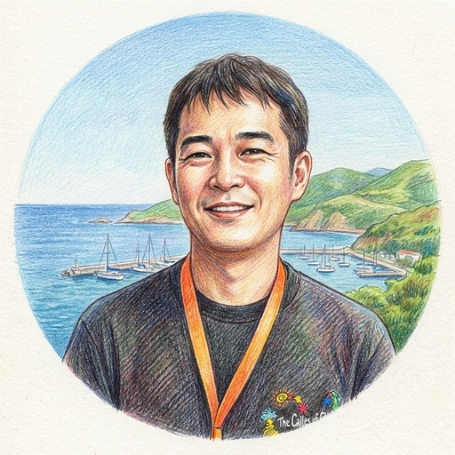

元・内閣府 公益認定等委員会事務局 審査監督調査官
優れた技術や事業構想が、申請書の上で伝わりきらない。
その一行を、審査官に「届く言葉」へと書き換えます。
当研究所の強みは, 元国家公務員の知見を活かし、「公益法人を、地域や社会課題の解決につなげる設計」ができることです。2030SDGs公認ファシリテーターとして大企業向けの研修実績も持ち、企業のCSR・CSVへの理解も深い。単なる法人設立にとどまらず、事業が自走し、社会に役立ち続けるための仕組みづくりまで支援します。
また、上場企業でAI事業に携わり、現在は自ら会社を経営する「数字が読め、経営がわかる」実務家として、公益認定の厳格な財務基準のクリアから事業のマネジメントまで、経営的な視座でサポートします。
そして、中央省庁での24年。内閣府 公益認定等委員会事務局の審査監督調査官として、一つの都道府県で活動する法人から、複数の都道府県にまたがって活動する国所管の大規模法人まで、その認定を審査する側で見てきました。行政庁にとっての「適切な説明」と「不適切な説明」の差を、間近で見てきたその経験から、あなたの志を「公共の文脈」へと繋ぎ直します。
内閣府 公益認定等委員会事務局にて審査監督調査官を務めるなど、行政の奥深くで数多くの申請書類と向き合ってきました。公益認定において書類の不整合が審査の長期化を招く現場や、補助金等においてどのような事業が採択され、何が退けられるのか、その境界線を見てきました。
物事を動かすのは、熱意だけではありません。行政機関が書類を読むとき、最初に探しているのは「根拠」です。ただし、それは単なる数字の羅列ではない。「なぜこの事業をやるのか」「なぜこの金額なのか」「なぜこの体制で実現できるのか」——すべての「なぜ」に対して、筋が通っているかどうか。
当研究所が行政書士として提供するのは、法的知見に基づき、その根拠と「筋道」を正確な文書へと落とし込む作業です。
公益認定、補助金、そして法人運営に伴う一般法務。いずれも審査を通過したら終わりではありません。その後の実績報告、定期報告、監査への対応——申請よりも長い道のりが続きます。当研究所が作成する書類は、のちの監査にも耐えうる、行政の論理に則った強固な土台となります。
私たちは、単なる書類の代書は行いません。
経営者ご自身が、自らの言葉で確信を持って語れる計画となるまで、徹底して書面を練り上げます。
公益法পদেরの設立認定申請、変更認定申請、定期報告書類の作成
一般社団・財団法人からの公益認定取得において最大の障壁となる、収支相償や公益目的事業比率などの厳格な「財務基準」。内閣府 公益認定等委員会事務局での審査監督調査官としての実務経験を活かし、行政が求める数字の根拠と法的な整合性を満たした申請書類を作成し、審査がこじれることのないスムーズな認定処分を目指します。
公益認定はゴールではありません。認定後に待ち受ける毎年の定期報告、数年に一度の立入検査、そして適正なガバナンスの維持こそが本当の本番です。当研究所では、審査側の論理を熟知する専門家として、月額55,000円（税込）〜の「運営支援顧問」サービスを提供し、認定取得後も末永く安定した法人運営を伴走支援いたします。また、運営がこじれ「認定の取り消し」に至る現場を見てきたからこそ、ガバナンス体制の維持も含め、持続可能な法人運営を的確にサポートします。
補助金・交付金等における申請書類の作成
2026年1月の法改正により、その専門性が明確化された領域です。行政書士の独占業務として明確化されたこの領域において、難易度の高い申請書類の作成を担います。公募要領の行間にある意図を読み解き、自社の事業を審査官の胸に落ちる「公的なロジック」へと翻訳することで、採択の可能性を引き上げます。
在留資格の申請取次、外国人雇用に関する書類作成、海外企業の日本進出に伴う許認可申請
法人のグローバル化に伴う、複雑な出入国管理・許認可の手続きを支援します。企業が高度な外国人人材を適法かつ安定的に雇用するための在留資格（就労ビザ等）の申請取次や、海外企業との合弁・日本市場参入をサポートする「日本側パートナー企業・担当者様」向けに行政文書の作成を行い、法的リスクを抑えた着実な事業展開を支援します。
契約書作成・各種許認可・議事録作成等
法人運営において日常的に発生する法務課題をサポートします。事業展開に不可欠な各種許認可の取得、議事録の適法な作成と管理、取引における契約書の作成やレビューなど、法的リスクを未然に防ぎ、事業の基盤を強固にするための実務を担います。
初回のご相談（30分・無料）で事業の輪郭をうかがった上で、お見積もりと業務範囲を書面でご提示いたします。
ご契約は、お見積もりにご納得いただいてからとなります。
※行政書士法第10条の2第1項に基づく正式な報酬額表は、こちらのページおよび当事務所内に掲示しております。

Hiroyuki Atsumi
行政書士 渥美洋行（登録番号 第26082315号）
AA WAVE合同会社 代表社員
元国家公務員
中央省庁で24年間従事。内閣府 公益認定等委員会事務局にて、審査監督調査官として約3年間在任。在任中、100法人前後の公益認定・変更認定・定期報告等の審査・監督に関与しました。大手企業の関連財団（企業系財団）、文化・スポーツ振興、大規模イベント運営など、多様な分野の国所管・大規模法人の認定・監督に携わっています。
単なる書類作成にとどまらず、「数字が読め、経営がわかる行政書士」として、法人の財務・ガバナンス構築など法人運営に強いのが特徴です。行政の厳格な審査基準と認定メカニズムを熟知しています。
退官後、ベンチャー企業で広報やAI関連のプロジェクト責任者を経て、AA WAVE合同会社を設立、官公庁の論理と最新テクノロジーの両方に触れてきました。
現在も同社での活動と並行し、行政書士として活動しております。
公益法人の運営や法制動向など、審査側の視点を交えた実務に役立つ専門的な知見を発信しています。
多くの申請書は、書き手の熱意だけで書かれています。しかし審査官が見ているのは「根拠」と、その根拠をつなぐ「筋道」です。「何を」「いくらで」「なぜその方法で」——一つでも「なぜ」が宙に浮いた瞬間、審査官の手は止まります。
また、専門家に「丸投げ」して作られた書類は、たとえ採択されても実際の事業運営や交付申請の段階で破綻するリスクがあります。経営者自身が腹落ちし、自らの言葉で語れる計画を構築することが重要です。
「公益目的事業の該当性」に加え、それを安定的かつ適正に遂行できる「財務基準（収支相償など）・ガバナンス体制」が実態として構築されているかを厳格に審査します。
単なる法制面（書類の形式）の整備にとどまらず、認定後の定期報告等を見据え、決算書等の「数字」を的確に読み解き、経営的視点から事業全体を構成できる専門家の関与が不可欠です。当研究所では、法律と財務の両面から確実な認定処分と持続可能な運営を支援します。
出入国在留管理局や各省庁が求める「真実性」と「事業の継続性・安定性」を、客観的な書類の積み重ねによって立証しなければならない点です。単なる申請書の記入ではなく、日本側の受け入れ態勢や事業計画・財務状況を的確に行政言語へと翻訳し、「法的に疑義のない状態」を作り上げる文書構成力が問われます。
当研究所では、法人化や公益認定の適否、許認可の見立てなどに関する「初回個別相談（30分）」を無料で承っております。
まずは貴社の状況をお伺いし、どのようなアプローチが可能か見通しをお伝えいたします。
また、いきなりの面談に迷われる場合や一般的なお問い合わせにつきましても、以下のフォームよりお気軽にご連絡ください。
※30分の無料相談以降の具体的な書類確認・論点整理につきましては、「スポット相談（33,000円/約60分）」や「事前診断（66,000円〜/約60分）」等にて承ります。
※行政書士法第10条の2第1項に基づく正式な報酬額表は、こちらのページおよび当事務所内に掲示しております。